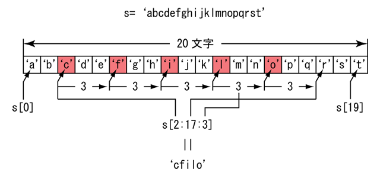

typing コマンドにある引数を指定すれば，テスト用のテキストを使うことができます．引数は講義中に口頭で伝えます．
| テスト用テキストの使用 |
|---|
$ typing ないしょ[Enter]
|
コンピュータで動作するソフトウェア（プログラム）を作成するには，人間がコンピュータに対する指示書を書き，それをコンピュータが理解できる形に翻訳します．この，人間が作成するコンピュータに対する指示書のことをソースプログラムといい，その指示書を書くための言葉をプログラミング言語と言います．前回作成したシェルスクリプトもプログラミング言語の一種であり，csh がそれを解釈してコンピュータに処理を実行させます．
プログラミング言語には情報処理II以降で学習する C 言語のほか，C++ 言語，Objective-C，C#，Java，JavaScript など，数え切れないほどたくさんものがありますが，ここでは習得が容易なのにもかかわらず非常に高機能な Python という言語を使ってみます．まず，Python で書かれたプログラムを実行する Python インタプリタのコマンド python を対話モードで起動します．
| 対話モードで Python を起動する |
|---|
$ python[Enter]
Python 2.7.5+ (default, Feb 27 2014, 19:37:08)
[GCC 4.8.1] on linux2
Type "help", "copyright", "credits" or "license" for more information.
>>>
|
インタプリタとコンパイラソースプログラムをコンピュータが理解できる形式に翻訳する方法には，インタプリタ方式とコンパイラ方式があります．インタプリタ方式は入力したソースプログラムを逐次翻訳する方法で，Python や Ruby，Perl などがこの方法を採用しています．コンパイラ方式は一括してコンピュータが理解できる形式に翻訳する方法で，C 言語や C++ 言語などがこの方法を採用しています．Java はコンパイラ方式によってソースプログラムを一旦仮想的なコンピュータ（仮想マシン，VM）用の形式に一括して翻訳した後，仮想マシンが翻訳された結果を本来のコンピュータが理解できる形式に逐次翻訳します．
対話モードでは，Python インタプリタは ">>>" というプロンプト（プライマリプロンプト）を表示して，命令の入力を待ちます．このほか，直前の入力によって "..." というプロンプト（セカンダリプロンプト）が表示される場合もあります．
コンピュータは電子計算機と呼ばれるくらいですから，計算をする機械です．だから，処理するデータは基本的に数値です．ですが，それだけでは実際の仕事に使えないので，数値をもとにして文字や図形など，さまざまなデータを表現します．文字や図形は目に見えるものですが，それらはコンピュータの内部では数値として表現されています．このように，データは何らかの対象を表している（抽象化している）ので，このようなデータを Python ではオブジェクトと呼んでいます．
データが表すものは，いくつかの種類に分類できます．1 と 2 は異なるデータですが，ともに数値という同じ種類に分類することができます．これをプログラミング言語ではデータの型あるいはデータ型と呼んでいます．Python の場合はオブジェクトの型あるいはオブジェクト型と呼んでいます．Python にはいくつかのオブジェクトの型が最初から用意されています．これらは組み込み型と呼ばれます．これを組み合わせて，プログラマが自分で型を定義することもできます．これはユーザ型と呼びます．
| Python の組み込み型 | ||
|---|---|---|
| 数値型 | 整数型 | 1 とか 10 とか -500 とか．普通 -2147483648 ～ 2147483647 の範囲を表せます． |
| 長整数型 | 1234L という風に表します．桁数に限界はありません（メモリの制限は受けます）． | |
| 実数型 | 1.23 とか 3e24 (3×1024)．有効数字は15～16桁です． | |
| 複素数型 | 実数型２個で実数部と虚数部を表します． | |
| シーケンス型 | 文字列型 | "This is a pen" 'Hello! World' とか |
| unicode 型 | u'日本語' u"和歌山大学" とか | |
| タプル型 | (10, 20, 30) ('和歌山健太郎', 19, "和歌山市栄谷") とか | |
| リスト型 | [10, 20, 30] ['This', 'is', 'a', 'pen', '.'] とか | |
| マップ型 | ディクショナリ型 | { 'key':'value', 'ten':10, 'apple':u'りんご' } とか |
Python の組み込み型には，他に論理型（ブール型, True/False），集合型，反復子型（イテレータ型），XRange 型，ファイルオブジェクト，メモリビュー型などがあります．
Python は第１０回で使った bc と同じように，電卓として使えます（対話モード）．bc とは異なり ">>>" というプロンプトが現れますので，そこに数式を入力してください．なお，# から行末まではコメントと呼ばれ，入力しても無視されます（したがって，ここでは入力しなくても構いません）．
| 数式を入力する |
|---|
>>> 1+2[Enter] # 数式を入力して改行する 3 ←計算結果が出力される |
整数同士の割り算は，小数点以下が切り捨てられてしまいます．商が 1 未満の場合は，0 になってしまいます．また，切り捨ての結果は商を超えない最大の整数になります．
| 整数同士の割り算の商は切り捨てられる |
|---|
>>> 1/2[Enter] # 整数同士の割り算 0 ←計算結果は整数になる >>> 5/3[Enter] 1 >>> -5/3[Enter] -2 ←商を越えない最大の整数に切り捨てられる |
除数／被除数のどちらかが実数なら，商も実数になります．小数点 "."（ピリオド）を含む数値は実数として扱われます．
| 実数の割り算の商は実数になる |
|---|
>>> 1.0/2[Enter] # 実数値の割り算 0.5 ←計算結果も実数になる >>> 5/3.0[Enter] 1.6666666666666667 >>> -5/3.0[Enter] -1.6666666666666667 |
計算結果は変数に代入して記憶しておくことができます．この代入によって変数 a が定義されます．
| 変数に値を代入する |
|---|
>>> a=1+2[Enter] # 計算結果を変数に代入する >>> ←計算結果は出力されない |
変数の内容を参照する場合は，bash などのシェルとは異なり，変数名に $ を付ける必要はありません．
| 変数の値を参照する |
|---|
>>> a[Enter] # 変数を入力して改行する 3 ←変数の内容が出力される |
未定義の変数 b を参照しようとするとエラーになります．
| 未定義の変数を参照するとエラーになる |
|---|
>>> b[Enter] # 未定義の変数を参照する Traceback (most recent call last): File "<stdin>", line 1, in "<module>" NameError: name 'b' is not defined ←'b' という名前 (name) が定義されて (is defined) いない (not) |
変数は式の途中でも参照できます．また，この代入で b を定義します．
| 式の途中で変数を参照する |
|---|
>>> b=a+1[Enter] # a の内容に 1 を足す >>> |
定義した変数は参照できます．
| 代入によって変数は定義される |
|---|
>>> b[Enter] # 変数 b の値を参照する 4 ←(1+2)+1 |
= でつないで一度に複数の変数に値を代入できます．
| 複数の変数に代入する |
|---|
>>> x=y=z=5[Enter] # 数式を入力して改行する >>> x 5 >>> y 5 >>> z 5 |
スクリプトで値を表示する場合は print 文を使います．
| Python を電卓として使う |
|---|
>>> print a,b,a+b,a*b[Enter]
3 4 7 12
|
Python 2.x と Python 3.x演習室のコンピュータにインストールされている Python のバージョンは 2.7 です．バージョン 3 の Python を起動するには，python3 コマンドを使用します．Python の最新バージョンは 3.3 ですが，これは 2.x とは完全な互換性を維持していません．例えば print 文がなくなり print() 関数に置き換わっているほか，整数同士の割り算でも実数として計算するなどの違いがあります．
文字列は文字そのものを並べたデータで，数字以外のものも含みます．'～' （シングルクォーテーションマーク）や "～" （ダブルクォーテーションマーク）ではさまれたものは文字列リテラル（文字列定数）と呼ばれます．
| 文字列リテラル |
|---|
>>>'1+2'[Enter] # 文字列リテラル '1+2' |
文字列リテラルを並べて書くと，間に空白があってもなくても一つの文字列になります．
| 文字列リテラルの連結 |
|---|
>>>>>> '1+2' '3*4'[Enter] # 文字列リテラルを並べて書く '1+23*4' |
' （シングルクォーテーションマーク）を含む文字列を使いたいときは，' の前（左）に \（バックスラッシュ）を置いてください．
| '～' の間に ' を入れたいときは前に \ を置く |
|---|
>>> 'don\'t stop me now'[Enter] # ' の前（左）に \ をおく 'don't stop me now' ← \ は現れない |
"～" で ' を含む文字列を挟むという方法もあります．この逆も可能です．csh とは異なり，Python では '～' と "～" に違いはありません．
| "～" で ' を含む文字列を挟んでも良い |
|---|
>>> "don't stop me now"[Enter] # ' を含むなら "～" ではさむ 'don't stop me now' |
文字列に日本語も使うことができますが，print 文を使わないとコンピュータ内部での表現がそのまま表示されてしまいます．
| 日本語の文字列 |
|---|
>>> '日本語'[Enter] # 日本語の文字列 '\xe6\x97\xa5\xe6\x9c\xac\xe8\xaa\x9e' ←日本語の内部表現 >>> print '日本語'[Enter] 日本語 |
しかし，異なるオペレーティングシステムで日本語が文字化けしないようにするには，u'～' で挟んだ文字列を使います．これは Unicode 文字列といいます．
| Unicode 文字列 |
|---|
>>> print u'日本語'[Enter] # Unicode 文字列 日本語 |
文字列も変数に代入することができます．
| 文字列も変数に代入できる |
|---|
>>> c='1+2'[Enter] >>> n=u'日本語'[Enter] >>> c[Enter] '1+2' ←文字列リテラルの形で出力される >>> print c[Enter] 1+2 ←print 文を使うと '～' が出ない >>> print n[Enter] 日本語 |
文字列の場合，+（加算）は文字列の連結になります．
| 文字列を加算すると連結される |
|---|
>>> c+'55'[Enter] # 文字列に文字列 "55" を加算 '1+255' |
ただし文字列の連結は，文字列同士でないとエラーになります．
| 文字列に文字列以外のものを連結するとエラーになる |
|---|
>>> c+55[Enter] # 文字列に数値の 55 を加算 Traceback (most recent call last): File "<stdin>", line 1, in <module> TypeError: cannot concatenate 'str' and 'int' objects |
文字列の場合，*（乗算）は文字列の繰り返しになります．
| 文字列に整数値をかけると繰り返しになる |
|---|
>>> c*5[Enter] # 文字列に数値の 5 を乗算 '1+21+21+21+21+2' ← '1+2 が５回繰り返される |
もちろん，文字列リテラルに直接整数値をかけることもできます．
| 文字列リテラルにも整数値をかけることができる |
|---|
>>> "<==="*3+"|---"*5[Enter]
'<===<===<===|---|---|---|---|---'
|
[～] を使えば，文字列の一部を取り出すことができます．要素は [先頭:末尾:増分] のように指定でき，「先頭」を省略したときには文字列の先頭 ，「末尾」を省略した場合は文字列の最後の文字の次，「増分」を省略したときは 1 が用いられます．これはスライスと呼ばれます．
| [～] を使って文字列の一部分を切り出すことができる |
|---|
>>> d="abcdefgh"[Enter] >>> d[0][Enter] 'a' ←先頭の文字は０番目 >>> d[2][Enter] 'c' ←３文字目は２番目 >>> d[-2][Enter] 'g' ←- をつけると最後から数える >>> d[3:5][Enter] 'de' ←３番目から５番目の前まで >>> d[:3][Enter] 'abc' ←３番目の前から前全部（最初の３文字） >>> d[3:][Enter] 'defgh' ←３番目より後全部（最初の３文字を除いた残り） >>> d[1:7:2][Enter] 'bdf' ←１番目から７番目の前まで一つおき (1, 3, 5) >>> d[::-1][Enter] 'hgfedcba' ←増分が負だと逆順になる |
スライス[～] を使った要素の指定をスライスと呼びます．これは文字列のほか，後述のタプルやリストでも使えます．
スライスを使って，文字列の途中に別の文字列を挟み込むことができます．
| 文字列に別の文字列をはさみ込む |
|---|
>>> d[:3]+"123"+d[3:][Enter] 'abc123defgh' ←３番目の前に "123" をはさむ |
[～] は文字列リテラルにも使えます．また，文字の位置を変数で指定することもできます．
| [～] は文字列リテラルにも使える． |
|---|
>>> i=10[Enter] >>> "0123456789abcdef"[i][Enter] 'a' ←10 進数 i を 16 進数に変換する |
文字列の長さ（文字数）を調べるには，len() という関数を使います．
| 文字列の長さ（文字数）は関数 len() で調べることができる |
|---|
>>> len(d)[Enter] 8 ←d は８文字 >>> len(d[:3]+"123"+d[3:])[Enter] 11 ←d に３文字追加 |
数値や文字列などの複数のデータを , （コンマ）で区切ってまとめたものをタプルと呼びます．複数のデータをまとめて変数に代入するときや，関数の値として使いたいときなどに使います．
| 複数のデータを , （コンマ）で区切って並べるとタプルになる |
|---|
>>> 10,'add',20[Enter] # データをコンマで区切って並べる (10, 'add', 20) ←タプルになるので (～) ではさまれている >>> 3+5, 1+2*(3+4)[Enter] (8, 15) |
ただし，コンマで区切っているだけだとタプルであることがわからないことがあるので，通常はさらに (～) で囲みます．
| タプルであることを明示するために全体を (～) で囲む |
|---|
>>> (10,'add',20)[Enter]
(10, 'add', 20) |
単一のデータもタプルにすることができます．その場合は，データの後ろに , （コンマ）を付けます．
| 単一の要素のタプルを作成するには後ろに , （コンマ）を付ける |
|---|
>>> 10,[Enter] (10,) >>> (10,)[Enter] (10,) |
tuple() 関数を使ってタプルを作ることもできます．これを使って文字列からタプルを作ると，文字列の各文字を要素とするタプルを作ることができます．
| tuple() 関数でタプルを作る |
|---|
>>> tuple("abcde")[Enter]
('a', 'b', 'c', 'd', 'e') |
タプルも変数に代入できます．
| タプルも変数に代入できる |
|---|
>>> e=(10,'add',20)[Enter] >>> e[Enter] (10, 'add', 20) ←変数 e の内容はタプル >>> f='sub',30[Enter] >>> f[Enter] ('sub', 30) ←変数 f の内容もタプル |
タプルを代入する際に左辺を変数のタプルにすれば，個々の変数に右辺のタプルの個々の要素を代入できます．
| 代入の左辺を変数のタプルにすると右辺のタプルの要素を個別に代入できる |
|---|
>>> (x,y,z)=(10,'add',20)[Enter] >>> x[Enter] 10 >>> y[Enter] 'add' >>> z[Enter] 20 >>> (u,v)=f[Enter] >>> u[Enter] 'sub' >>> v[Enter] 30 |
(～) を省略するれば，次のように書くこともできます．
| (～) を省略してこのように書くこともできる |
|---|
>>> x,y,z=10,'add',20[Enter] >>> x[Enter] 10 >>> y[Enter] 'add' >>> z[Enter] 20 |
この時，左辺と右辺のタプルの要素数が一致していないとエラーになります．
| 左辺と右辺の要素数が一致している必要がある |
|---|
>>> (x,y,z)=10,20[Enter] Traceback (most recent call last): File "<stdin>", line 1, in <module> ValueError: need more than 2 values to unpack ←少ない >>> u,v=e[Enter] Traceback (most recent call last): File "<stdin>", line 1, in <module> ValueError: too many values to unpack ←多い |
タプル同士を +（加算）でつなぐと連結されます．
| タプルを加算すると連結される |
|---|
>>> ("one","two","three")+("four","five")[Enter] ('one', 'two', 'three', 'four', 'five') >>> e[Enter] # 変数 e の内容を見る (10, 'add', 20) >>> e=e+('end','bye')[Enter] >>> e[Enter] # もう一度変数 e の内容を見る (10, 'add', 20, 'end', 'bye') ←後ろに追加されている |
タプルに *（乗算）で整数値をかけると，その要素が繰り返されます．
| タプルに整数値をかけると要素が繰り返される |
|---|
>>> (1,2,3)*3[Enter] (1, 2, 3, 1, 2, 3, 1, 2, 3) >>> f*3[Enter] ('sub', 30, 'sub', 30, 'sub', 30) |
タプルもスライス [～] を使ってタプルの個々の要素を操作することができます．
| [～] を使ってタプルの要素を取り出すことができる |
|---|
>>> e[0][Enter] 10 ←先頭の要素は０番目 >>> e[2][Enter] 20 ←３つ目の要素は２番目 >>> e[-1][Enter] 'bye' ←- をつけると後ろから数える >>> e[1:3][Enter] ('add', 20) ←１番目から３番目の前まで >>> e[1:4:2][Enter] ('add', 'end') ←１番目から４番目の前まで一つとび >>> e[2:][Enter] (20, 'end', 'bye') ←２番目から残り全部 >>> e[:-2][Enter] (10, 'add', 20) ←最後から２番目より前全部 >>> e[::-2][Enter] ('bye', 20, 10) ←最後から逆順に一つとび |
タプルの要素数も len() 関数で調べることができます．
| タプルの要素数は len() で調べることができる． |
|---|
>>> len(e)[Enter] 5 ←要素数は５ |
リストもタプルと同様に複数のデータをひとまとめにすることができる便利なデータ構造ですが，個々の要素の入れ替えなど，さまざまなデータ操作を行うことができます．複雑なデータ処理を行う場合はは，このリストを使います．リストは [～] の間に数値や文字列などのデータを , （コンマ）で区切って並べます．
| リストは [～] の間に数値や文字列などのデータを , で区切って並べたも |
|---|
>>> ["abc","def",10,20][Enter] # リスト ['abc', 'def', 10, 20] |
リストも変数に代入できます．
| リストも変数に代入できる |
|---|
>>> g=["abc","def",10,20][Enter] >>> g[Enter] # 変数 g の内容を見る ['abc', 'def', 10, 20] |
append() というメソッドを使って，リストの末尾に要素を追加することができます．オブジェクトであるデータは，そのオブジェクト型（データの種類）によって処理方法が異なります（例えば，肉は包丁で切れるけど鉄は包丁では切れない，みたいな）．メソッドはオブジェクト型ごとに定義されている処理方法のことを言います．
| append を使ってリストの末尾に要素を追加できる |
|---|
>>> g.append(30)[Enter] >>> g[Enter] # 変数 g の内容を見る ['abc', 'def', 10, 20, 30] ←リストの末尾に追加されている |
pop() というメソッドを使えば，リストの末尾の要素を一つ取り出して，その分リストを切り詰めることができます．
| pop を使ってリストの末尾の要素を取り除く |
|---|
>>> g.pop()[Enter] 30 ←リストの末尾の要素 >>> g[Enter] # 変数 g の内容を見る ['abc', 'def', 10, 20] ←末尾の要素が取り除かれている |
リストも +（加算）で連結することができます．
| リストを加算すると連結される |
|---|
>>> ["one","two","three"]+["four","five"][Enter] ['one', 'two', 'three', 'four', 'five'] >>> g=g+["end","bye"][Enter] >>> g[Enter] # 変数 g の内容を見る ['abc', 'def', 10, 20, 'end', 'bye'] ←リスト末尾に追加 |
同様に *（乗算）で整数値をかけて，要素を繰り返すことができます．
| リストに整数値をかけると要素が繰り返される |
|---|
>>> [1,2,3]*3[Enter]
[1, 2, 3, 1, 2, 3, 1, 2, 3] |
リストもスライス [～] を使ってリストの個々の要素を操作することができます．
| [～] を使ってリストの要素を操作する |
|---|
>>> g[0][Enter] 'abc' ←先頭の要素は０番目 >>> g[2][Enter] 10 ←３つ目の要素は２番目 >>> g[-1][Enter] 'bye' ←- をつけると後ろから数える >>> g[1:3][Enter] ['def', 10] ←１番目から３番目の前まで >>> g[2:][Enter] [10, 20, 'end', 'bye'] ←２番目から残り全部 >>> g[:-2][Enter] ['abc', 'def', 10, 20] ←末尾から２番目より前全部 |
リストの場合，代入の左辺のリストの要素を [～] で指定して，右辺の内容で置き換えることができます．
| 要素に代入して置き換えることもできる |
|---|
>>> g[2]="ghi"[Enter] # ２番目の要素を "ghi" で置き換え >>> g[Enter]" ['abc', 'def', 'ghi', 20, 'end', 'bye'] >>> g[3]=g[3]+5[Enter] # ３番目の要素に 5 を加える >>> g[Enter]" ['abc', 'def', 'ghi', 25, 'end', 'bye'] |
代入の左辺のリストの要素の範囲を [～] で指定すれば，その範囲にある複数の要素を右辺で置き換えることができます．この時，左辺の要素数と左辺の要素数が一致している必要はありません．
| 範囲を指定して代入すれば要素を置き換えたり挿入したりできる |
|---|
>>> g[1:3]=[5,6,7][Enter] # "def", "ghi" を置き換え >>> g[Enter] ['abc', 5, 6, 7, 25, 'end', 'bye'] >>> g[1:1]=["XYZ"][Enter] # １番目の要素の前に "XYZ" を挿入 >>> g[Enter] ['abc', 'XYZ', 5, 6, 7, 25, 'end', 'bye'] >>> g[:0]=e[-1:][Enter] # 先頭に末尾の要素以降を挿入 >>> g[Enter] ['bye', 'abc', 'XYZ', 5, 6, 7, 25, 'end', 'bye']←要素数 9 >>> g[9:]=[g[3],g[5]][Enter] # 末尾に３番目と５番目を追加 >>> g[Enter] ['bye', 'abc', 'XYZ', 5, 6, 7, 25, 'end', 'bye', 5, 7] |
リストの要素を削除するには，空のリスト [] を代入します．
| リストの要素を削除するには空のリスト [] を代入する |
|---|
>>> g[3:8]=[][Enter] # ３番目から８番目の前まで削除 >>> g[Enter] ['bye', 'abc', 'XYZ', 'bye', 5, 7] |
あるいは，del 文を使って要素を削除することもできます．
| 要素の削除には del も使える |
|---|
>>> del g[:2][Enter] # ２番目まで全部削除 >>> g[Enter] ['XYZ', 'bye', 5, 7] |
リストの要素数も len() 関数で調べることができます．
| リストの要素数は len() で調べることができる |
|---|
>>> len(g)[Enter] 4 ←要素数は 4 |
なお，リストを文字列で置き換えると，文字列の各文字を要素とするリストになります．これは list() 関数でも同じことができます．list() 関数は文字列，タプル，およびリストから，その個々の要素を要素とする新たなリストを作ります．
| リストを文字列で置き換えると１文字ずつばらばらにしたリストになる |
|---|
>>> g=[][Enter] # 変数に空のリストを代入する >>> g[:]="SMTWTFS"[Enter] # リスト全体を文字列で置き換える >>> g[Enter] ['S', 'M', 'T', 'W', 'T', 'F', 'S'] >>> list("SMTWTFS")[Enter] # リスト全体を文字列で置き換える >>> g[Enter] ['S', 'M', 'T', 'W', 'T', 'F', 'S'] |
このように，リストでは要素の入れ替えや追加・削除を行うことができます．
タプルとリストの違い変数に代入されているタプルもリストも（文字列も），[～] で要素を取り出すことができます．>>> s='abcde' # 文字列 >>> print s[3] d>>> t=('a', 'b', 'c', 'd', 'e') # タプル >>> print t[2] c>>> l=['a', 'b', 'c', 'd', 'e'] # リスト >>> print l[1] bしかし，個々の要素への代入（要素の置き換え）は，リストしか行うことができません．>>> s='abcde' # 文字列 >>> s[3]='x' Traceback (most recent call last): ←エラー File "<stdin>", line 1, in <module> TypeError: 'str' object does not support item assignment>>> t=('a', 'b', 'c', 'd', 'e') # タプル >>> t[2]='x' Traceback (most recent call last): ←エラー File "<stdin>", line 1, in <module> TypeError: 'tuple' object does not support item assignment>>> l=['a', 'b', 'c', 'd', 'e'] # リスト >>> l[1]='x' # エラーにならない >>> print l ['a', 'x', 'c', 'd', 'e'] ←２番目の要素が 'x' に置き換わっている
ディクショナリはキーとデータを対にして保持するものです．これはリストと同じような使い方ができますが，要素のデータを番号ではなくキー（文字列）で指定することができます．ディクショナリのデータは {～} の間にキーとデータを : （コロン）で結びつけたものを , （コンマ）で区切って並べます．
| {～} の間にキーとデータの対を : で結んだものを , で区切って並べたものがディクショナリ． |
|---|
>>> {"aoki":24,"aoyama":32,"haruyama":22}[Enter]
{'aoki': 24, 'aoyama': 32, 'haruyama': 22} |
ディクショナリも変数に代入することができます．
| ディクショナリも変数に代入できる |
|---|
>>> h={"aoki":24,"aoyama":32,"haruyama":22}[Enter] >>> h[Enter] {'aoki': 24, 'aoyama': 32, 'haruyama': 22} |
ただし，ディクショナリは +（加算）や *（乗算）によって連結したり要素を繰り返したりすることはできません．
| ディクショナリは加算（連結）や乗算（繰り返し）はできない |
|---|
>>> h+h[Enter]Traceback (most recent call last): File "<stdin>", line 1, in <module> TypeError: unsupported operand type(s) for +: 'dict' and 'dict' >>> h*3[Enter] Traceback (most recent call last): File "<stdin>", line 1, in <module> TypeError: unsupported operand type(s) for *: 'dict' and 'int' |
ディクショナリの場合は，要素をキーで指定して取り出すことができます．これにより，データベースのような使い方ができます．キーを指定する際には [～] を使います．
| ディクショナリを格納した変数名に [～] でキーを指定すればデータを取り出すことができる． |
|---|
>>> h['aoyama'][Enter]
32 |
ただし，存在しないキーを指定すると，エラーになります．
| 存在しないキーを指定してデータを取り出そうとするとエラーになる |
|---|
>>> h['tanaka'][Enter]
Traceback (most recent call last):
File "<stdin>", line 1, in <module>
KeyError: 'tanaka' |
キーがディクショナリに存在するかどうかは in あるいは not in で調べることができます． in の場合，存在すれば True（真），存在しなければ False（偽） となります．この値は条件分岐の際に使います．
| キーがディクショナリに存在するかどうかを調べる |
|---|
>>> print 'tanaka' in h[Enter] False >>> print 'tanaka' not in h[Enter] True >>> print 'aoyama' in h[Enter] True |
代入の左辺のディクショナリの要素を [～] でキーを指定すれば，そのキーに対応するデータを書き換えることができます．
| キーを指定して値を代入してデータを更新できる |
|---|
>>> h['aoyama']='pass'[Enter] >>> h[Enter] {'aoki': 24, 'aoyama': 'pass', 'haruyama': 22} |
この場合，キーが存在しなければ，そのキーとデータの対が新たに作られます．
| 存在しないキーを指定してデータを代入すればデータが追加される． |
|---|
>>> h['tanaka']=44[Enter] >>> h[Enter]" {'aoki': 24, 'tanaka': 44, 'aoyama': 'pass', 'haruyama': 22} |
ディクショナリのデータを削除するには，del 文を使います．
| 特定のデータを削除するときは del を使う． |
|---|
>>> del h['aoyama'][Enter] >>> h[Enter] {'aoki': 24, 'tanaka': 44, 'haruyama': 22} |
ディクショナリの要素数も len() 関数で調べることができます．
| ディクショナリの要素数は len() で調べることができる． |
|---|
>>> len(h)[Enter] 3 ←要素数は 3 |
変数の内容は別の変数に代入できます．
| 変数の値の別の変数に代入する |
|---|
>>> a=10[Enter] # a に数値を代入する >>> b=a[Enter] # b に a を代入する >>> a[Enter] 10 >>> b[Enter] 10 ←a と b は同じ値 >>> b=20[Enter] # b に a と異なる数値を代入する >>> a[Enter] 10 >>> b[Enter] 20 ←a と b は異なる値 |
Python の変数は，データそのもの（実体）ではなく，そのデータ自体の識別子を記憶します．このようなデータの保持の仕方を参照 (reference) といいます．変数に別の変数の値を直接代入した場合は別の変数が保持する識別子がコピーされるため，代入先の変数は別の変数と同じデータを参照します．
変数から変数への代入が参照のコピーであることは，数値や文字列，あるいは要素を個別に変更できないタプルであれば問題ありませんが，要素を個別に変更できるリストの場合は気を付けなければならないことがあります．リストを参照している変数の内容を他の変数に直接代入し，代入された変数側でリストの要素を操作すると，元の変数の側でも要素が置き換わっています．
| リストを代入した変数でリストの要素を操作する |
|---|
>>> a=[10,20,30][Enter] # a に リストを代入する >>> b=a[Enter] # b に a を代入する >>> a[Enter] [10, 20, 30] >>> b[Enter] [10, 20, 30] ←a と b は同じ値 >>> b[1]=100[Enter] # b の 1 番目の要素を置き換える >>> a[Enter] [10, 100, 30] ←a の 1 番目の要素が置き換わっている >>> b[Enter] [10, 100, 30] ←a と b は同じ値 |
これは変数 a と変数 b が同じデータ（実体）を参照しているからです．元の変数が参照しているデータを変更せずに代入先の変数が参照しているデータを変更する場合は，識別子ではなくデータ（実体）そのものをコピー（複製）します．
| list() 関数によるデータ（実体）のコピー（複製） |
|---|
>>> a=[10,20,30][Enter] # a に リストを代入する >>> b=list(a)[Enter] # a から新たにリストを作って b に代入する >>> a[Enter] [10, 20, 30] >>> b[Enter] [10, 20, 30] ←a と b は同じ値 >>> b[1]=100[Enter] # b の 1 番目の要素を置き換える >>> a[Enter] [10, 20, 30] ←a の 1 番目の要素は変化していない >>> b[Enter] [10, 100, 30] ←b の 1 番目の要素は置き換わっている |
なお，スライスを使ったり，データの連結などの演算を行ったりした場合も，新しいリストが作成されます．先頭と末尾を省略した a のスライス a[:] は，a と同じ内容の（別の）リストになります．
| スライスによるデータ（実体）のコピー（複製） |
|---|
>>> a=[10,20,30][Enter] # a に リストを代入する >>> b=a[:][Enter] # a のすべての要素からなるスライス >>> a[Enter] [10, 20, 30] >>> b[Enter] [10, 20, 30] ←a と b は同じ値 >>> b[1]=100[Enter] # b の 1 番目の要素を置き換える >>> a[Enter] [10, 20, 30] ←a の 1 番目の要素は変化していない >>> b[Enter] [10, 100, 30] ←b の 1 番目の要素は置き換わっている |
Python の対話モードを終了するには，exit() とタイプして改行するか，Ctrl-D をタイプします．
| Python の対話モードを終了する |
|---|
>>> Ctrl-D
|
それでは Python のスクリプトを作成してみましょう．スクリプト名は sample.py とします．Python スクリプトの拡張子には .py を用いるのが一般的です．テキストエディタを使って，sample.py というファイルを作成してください．emacs を使う場合は次のようにします．
| emacs で Python スクリプトを作成する |
|---|
$ emacs sample.py &[Enter] |
このスクリプトを解釈して実行するのは python コマンドなので，スクリプトの１行目には csh スクリプトの場合と同様に #! に続けて python コマンドの絶対パス /usr/bin/python を書きます．また，２行目ではスクリプトで使用する文字コードを指定します．Python にとって必要なのは coding: utf-8 の部分だけですが，前後に -*- を書けば，emacs に対してもこのファイルの文字コードが utf-8 であることを伝えます．なお，３行目以降にある # から行末まではコメントなので，プログラムの実行に影響を与えません（無いのと同じ）．
#!/usr/bin/python # -*- coding: utf-8 -*- x = 1 y = 1 print x, '+', y, '=' print x + y
変更できたら C-x C-s でファイルを保存します．emacs は終了せず，起動したままにしておきましょう．そしてターミナルのウィンドウで chmod コマンドを使って sample.py を実行可能にしてください．
| Python スクリプトを実行可能にする |
|---|
$ chmod +x sample.py[Enter] |
実際にスクリプトを実行してみてください．
| Python スクリプトを実行する |
|---|
$ ./sample.py[Enter]
1 + 1 =
2 |
出力の１行目は x, '+', y, '=' の四つのデータをひとつずつ出力しています．また２行目行で x + y という計算の結果を出力しています．
/usr/bin/env コマンドと python コマンドpython は比較的新しいコマンドなので，/usr/bin 以外の場所に置かれている場合もあります．そのため，python コマンドがどこに置かれていても起動できるように，ほとんどの Unix 系 OS に用意されている /usr/bin/env コマンドを介して python コマンドを起動する方法が採用されることが多いようです．#!/usr/bin/env python ...
基本的な Python の機能は非常にシンプルですが，モジュールという機構を使って必要に応じて機能を追加できます．たとえば，sys というモジュールを組み込めば，オペレーティングシステムに関連した機能を追加することができます．これを使って，ここでは Python のスクリプトで作成したコマンドに与えた引数を取得してみます．sample.py に下記の太字の部分を追加した後，C-x C-s でファイルを保存してください．
#!/usr/bin/python # -*- coding: utf-8 -*- import sys # sys モジュールの導入 print sys.argv # sys モジュールの変数 argv の出力 x = 1 y = 1 print x, '+', y, '=' print x + y
import sys は sys というモジュールの導入（読み込み）を指示します．これにより sys モジュールが用意している機能が利用可能になります．print sys.argv は sys モジュールに用意されている argv という変数を出力します．このスクリプトを実行すると，次のような出力が得られます．
| Python スクリプトを引数を付けずに実行する |
|---|
$ ./sample.py[Enter] ['./sample.py'] 1 + 1 = 2 |
出力に ['./sample.py'] が含まれます．これが print sys.argv による出力です．この出力は，実行したコマンド名（スクリプトのファイル名）そのものを唯一の要素とするリストです．次に，このスクリプトに引数を指定して実行してみます．
| Python スクリプトを引数を付けて実行する |
|---|
$ ./sample.py 2 3[Enter] ['./sample.py', '2', '3'] 1 + 1 = 2 |
今度は出力に ['./sample.py', '2', '3'] が含まれます．スクリプトに指定した引数は，変数 sys.argv に格納されているリストの二番目と三番目の要素に格納されています．したがってこれらを取り出すには，それぞれ sys.argv[1] と sys.argv[2] を使用すればいいことがわかります．そこで，sample.py を次のように書き換えてみます．sys.argv という変数名は長いので，一旦 argv という変数に代入します．ファイルを書き換えたら，C-x C-s でファイルを保存してください．
#!/usr/bin/python # -*- coding: utf-8 -*- import sys argv = sys.argv # 引数のリスト x = argv[1] # スクリプトの第１引数 y = argv[2] # スクリプトの第２引数 print x, '+', y, '=' print x + y
先ほどと同様に，このスクリプトに引数を指定して実行します．変数 x と y に代入する値をスクリプトの引数に書き換えたので，出力される数式の数字が引数に与えたものに置き換わっているはずです．
| Python スクリプトを引数を付けて実行する |
|---|
$ ./sample.py 2 3[Enter] 2 + 3 = 23 |
数字は確かに置き換わりましたが，結果がちょっと微妙です．argv の要素はすべて文字列なので，そのまま + で加算すると，文字列の連結になってしまいます．ちゃんと加算の結果を得るには，これらを数値に変換する必要があります．整数値への変換には int()，実数値への変換には float() を使います．
#!/usr/bin/python # -*- coding: utf-8 -*- import sys argv = sys.argv x = int(argv[1]) # スクリプトの第１引数を整数化 y = int(argv[2]) # スクリプトの第２引数を整数化 print x, '+', y, '=' print x + y
ファイルを書き換えたら C-x C-s でファイルを保存して，スクリプトを実行してください．
| Python スクリプトを引数を付けて実行する |
|---|
$ ./sample.py 2 3[Enter] 2 + 3 = 5 |
最後に，print は出力の最後で改行するため，print を二つ書くと，この例のように２行に分かれてしまいます．print で改行したくないときは，print の行の末尾に , （コンマ）を追加します．ファイルを書き換えたら C-x C-s でファイルを保存して，スクリプトを実行してください．
#!/usr/bin/python # -*- coding: utf-8 -*- import sys argv = sys.argv x = int(argv[1]) y = int(argv[2]) print x, '+', y, '=', # 末尾にコンマを追加した print x + y
こうすると，出力は次のようになります．
| Python スクリプトを引数を付けて実行する |
|---|
$ ./sample.py 2 3[Enter] 2 + 3 = 5 |
このスクリプトの引数に，さまざまなデータを指定して実行してみてください．ただし，引数の数が２個でなかったり，引数が整数値でなかったりするとエラーになってしまいます．
次に，Python スクリプトで数を数えるコマンド（カウンタ）を counter.py というファイル名で作ってみましょう．カウンタとは，下の例のように，実行するたびに出力する数値が１ずつ増えていくコマンドです（以下は例ですから，今はまだ実行できません）．
| カウンタの動作 |
|---|
$ ./counter.py[Enter] 1 $ ./counter.py[Enter] 2 $ ./counter.py[Enter] 3 ←実行するたびに数が増えていく |
とりあえずテキストエディタを使って counter.py というファイルを作成します．これは Python スクリプトですから，１行目は #!/usr/bin/python，２行目は # -*- coding: utf-8 -*- にしてください．それ以降のスクリプトの内容は，以下の文章を読んで，自分で考えてください．
#!/usr/bin/python # -*- coding: utf-8 -*-
counter.py は数値（カウント）を出力するとすぐに終了してしまいますから，counter.py は何らかの方法で前回出力した数値（カウント）が何だったか覚えておく必要があります．ここでは，それをファイルに記録しておくことにします．この段取りは次のようになります．
カウントを記録しておくファイルのファイル名は count.dat とします．最初に counter.py を実行した時には，前回のカウントは調べられませんから，その場合はカウントを 0 としておく必要があります．そのために，前処理として 0 という文字だけが入った count.dat というファイルを作ります．これはテキストエディタでも作成できますが，次のようにして echo コマンドでも作成できます．
| 0 という内容の count.dat というファイルを作る |
|---|
$ echo -n 0 > count.dat[Enter]
|
それでは，実際に処理の内容を counter.py に追加していきましょう．
ファイルからデータを読み込むには，最初にファイルを読み込みモードで開き (open)，次に開いたファイルからデータを読み出して (read)，最後にファイルを閉じる (close) という手順をとります．
ファイル名が count.dat のファイルを開くには，次のようにします．ここで 'r' はファイルを読み込みモードで開くことを示します．open() 関数から得た値（開いたファイルを表すデータ，ファイルオブジェクト）を変数（ここでは f）に代入しておきます．
f = open('count.dat', 'r')
このファイルオブジェクト f から，ファイルに格納されているデータを読み出して，変数 d に代入します．データの読み出しには read() というメソッドを使います．read() はファイルの内容を全部読み出します．ファイルの内容は文字列として読み出されます．
d = f.read()
ファイルの内容を読み終わったら，close() というメソッドを使ってファイルを閉じます．開いたものは必ず閉じてください．
f.close()
ファイルから読み出したデータは文字列です．したがって，変数 d には文字列が格納されていますから，これに 1 を加えるためには数値に直す必要があります．数字の文字列を整数値に変換するには int(文字列) 関数を使います．また，1 を加えた結果は，ファイルに保存するために再び文字列に戻しておきます．数値から文字列に変換するには str(数値) 関数を使います．
c = str(int(d) + 1)
1 を加えた結果の文字列を出力します．
print c
出力した結果をファイルにも保存しておきます．ファイルにデータを書き込むには，最初にファイルを開き (open)，次に開いたファイルからデータを書き出して (write)，最後にファイルを閉じる (close) という手順をとります．
ファイル名が count.dat のファイルを開くには，次のようにします．'w' はこのファイルを書き込みモードで開くことを示します．open() 関数から得たファイルオブジェクトを変数（ここでは f）に代入しておきます．
f = open('count.dat', 'w')
このファイルオブジェクト f に文字列 c を書き込みます．データの書き込みには write() というメソッドを使います．write() によって書き込めるデータは文字列だけです．文字列以外のデータは，文字列の形に直す必要があります（これを行う pickle というモジュールがあります）．
f.write(c)
保存すべき文字列をすべてファイルに書き込んだら，close() というメソッドを使ってファイルを閉じます．開いたものは必ず閉じてください．
f.close()
以上の内容の Python スクリプト counter.py を作成し，それを実行可能にしてから，実際に実行してみてください．ちゃんと実行回数を数えることができるでしょうか？
| カウンタの実行 |
|---|
$ ./counter.py[Enter] 1 $ ./counter.py[Enter] 2 $ ./counter.py[Enter] 3 |
実行時のエラーこのスクリプトの実行したときによく起こるエラーは，count.dat がないか，count.dat の中に数字以外の文字が入っている場合です．いずれの場合も echo -n 0 > count.dat というコマンドを実行して，count.dat を初期化すれば直ります．0 のところは適当な整数で構いません（その数 +1 からカウントを始めます）．
Webページ中にカウンタを組み込むめば，Web ページがどのくらいの人に見てもらえたのか数えることができます．このようなカウンタはアクセスカウンタと呼ばれたりします．SSI (Server Side Include) という機能を使えば Web ページ中にコマンドの出力を埋め込むことができるので，この機能と前節で作成したカウンタのスクリプト counter.py を使って，簡単なアクセスカウンタを作ってみましょう．
注意SSI は間違った使い方をするとサーバにトラブルを起こしたり，大きなセキュリティホール（Webページの改ざんや不正侵入などを可能にしてしまうような不備）を作る場合があるため，スクリプトの作成は慎重に行う必要があります．
counter.py と count.dat をホームページ公開用のディレクトリ public_html の下にコピーしてください．
$ cp counter.py count.dat ~/public_html[Enter]
次に，public_html に下のような HTML ファイルを作成してください． ファイル名は counter.shtml としてください．
<!DOCTYPE html>
<html>
<head>
<meta charset="utf-8">
<title>counter test</title>
</head>
<body>
<p>あなたは <!--#exec cmd="./counter.py"--> 番目の訪問者です．</p>
</body>
</html>
この counter.shtml を（ファイルのアイコンをダブルクリックするのではなく）Web サーバー経由で開いてください．Web サーバー経由で開くには http://www.wakayama-u.ac.jp/~tokoi/lecture/shori1/shori1-12/ にある自分のユーザ名をクリックするか，URL に http://com.center.wakayama-u.ac.jp/~ユーザ名/counter.shtml を指定します．http://com.center.wakayama-u.ac.jp/~tokoi/lecture/shori1/shori1-07/ から自分の Web ページを開いて，その アドレスバーの後ろに counter.shtml を追加して改行（[Enter]）して開くこともできます．
注意SSI は Web サーバの機能です．Web サーバを経由せずに HTML ファイルを開いても動作しません．HTML ファイルをダブルクリックして開いても動作しません．
こうすると，この Web ページにアクセスするたびに counter.py が実行されて，その出力が <!--...--> の部分と置き換わります．counter.py の出力が 1234 なら，この部分は次のようになります．
あなたは 1234 番目の訪問者です．
参考までに，別のファイル（下の例では file.txt）を埋め込むときには次のようにします．
××さんは次のように言いました「<!--#include file="file.txt"-->」
グラフィカルなカウンタを作るためには Python の GD モジュールなどを使えば便利なのですが，ここでは counter.py の出力を工夫してみます．まず，次のような数字の画像を counter.shtml と同じディレクトリ内に用意したとします．
|
|
|
|
|
| 0.png | 1.png | 2.png | 3.png | 4.png |
|---|---|---|---|---|
|
|
|
|
|
| 5.png | 6.png | 7.png | 8.png | 9.png |
このとき HTML で次のように記述すれば， という表示が得られます．
<img src="1.png"><img src="2.png"><img src="3.png"><img src="4.png">
つまり，counter.py が 1234 の代わりに上のような出力を行えば，グラフィカルなカウンタが実現できます．そのためには，変数 c を出力している print を加工します．文字列を for の反復子に指定すれば，その内容を 1 文字ずつ取り出すことができます．その前後に '<img src="' と '.png">' を追加すればよいので，例えば次のようにします．
for i in c:
print '<img src="' + i + '.png">',
この方法だと print が（',' コンマによって）表示内容に空白を追加して出力するので，画像と画像の間に隙間が開いてしまいます．もし隙間を開けずに画像を並べたければ，文字列のまま連結してから出力するようにします（print の代わりに sys.stdout.write() で出力するという方法もあります）．
s = '' # 変数 s に空の文字列を代入
for i in c:
s = s + '<img src="' + i + '.png">'
print s
なお，s = s + '文字列' は s += '文字列' と書くこともできます．
次の (1)～(4) の内容を一つのメールにまとめて tokoi@sys.wakayama-u.ac.jpに送ってください．メールの件名 (Subject) は shori1-12 にしてください．期限は次週の水曜日中までです．
注意counter.py はカウント数のデータファイル (count.dat) の更新時に排他制御をしていないので，複数の人が同時にアクセスしたときなどにカウントが狂ってしまいます．このためこのスクリプトは，このままではあまり実用的ではありません．排他制御
複数の人が同時に counter.shtml にアクセスすると，複数の couter.py が同時に実行されます．そうすると，複数の counter.py が同時に count.dat にデータを出力したり，ある counter.py が count.dat にデータを出力している最中に別の counter.py が count.dat からデータを入力してしまうといったことが起こります．この場合，count.dat の内容が変になったり，正常なデータの読み出しが行えなかったりします．
このようなときには，一つの counter.py だけがデータファイル count.dat を更新し，他は更新が終わるまで待つという処理を行う必要があります．このような処理を排他制御と言います．
Python でこのような排他制御を行うには，Python の lockfile モジュールや Python から flock などのオペレーティングシステムの機能を呼び出す方法などがありますが，それには counter.py をだいぶ書き換える必要があります．そこで，ここでは lockfile というコマンドを用いる方法を紹介します．このコマンドは，次のような動作をします．詳細は man lockfile を見てください．
- 引数に指定したファイルが無ければ，それを作成する．
- 引数に指定したファイルが存在すれば，そのファイルがなくなるまで待つ．
これを counter.py に応用するには，たとえば次のような bash スクリプト counter.bash を用意して，counter.py の代わりに実行するようにします．
#!/bin/bash lock="counter.lock" lockfile -3 -r 3 -l 10 $lock && ./counter.py rm -f $lockここで lockfile コマンドのオプション -3 は，ロックファイル (counter.lock) が存在すれば３秒待つことを表します．これを３回繰り返し (-r 3)，その間にロックファイルが無くなればロックファイルを作成して成功とします．もしロックファイルが無くならなければ失敗とします．ただし，存在するロックファイルが作成後１０秒以上経過 (-l 10) していたら，そのロックファイルを削除して新たにロックファイルを作成して成功とします．最後のオプションは，counter.py が異常終了してロックファイルを消さなかった場合などに有効です．
なお，コマンドの後ろに && を置くと，&& の左のコマンドの実行が成功したときにのみ，&& の右側のコマンドが実行されます．